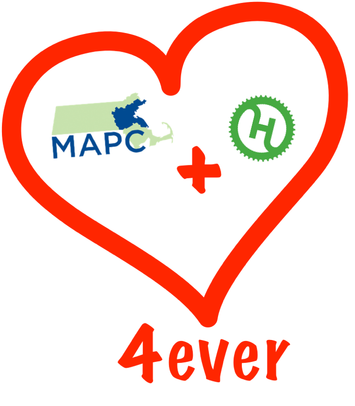

The Metropolitan Area Planning Council (MAPC) is a regional planning agency serving the people who live and work in the 101 cities and towns of Metropolitan Boston. Our mission is promoting smart growth principles and regional collaboration.

[...] Expanded access to information will also help residents and other stakeholders to participate more fully and more effectively in planning efforts. [...]
Christian Spanring
cspanring@mapc.org
cspanring